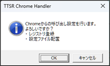
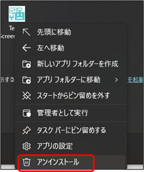

インストール
・ インストール
msiファイルをダウンロードして、実行してください。
インストール後、
デスクトップにできたショートカットからアプリを１度実行してください。
このアプリをChromeから呼び出すための設定を行います。

・ アンインストール
スタートメニューでアプリのアイコンを右クリックして、
表示されたメニューからアンインストールを選択してください。

必要環境
64ビット版 Windows 10 または Windows 11
TexTra Chrome (ブラウザアプリChrome、Edge用の拡張)